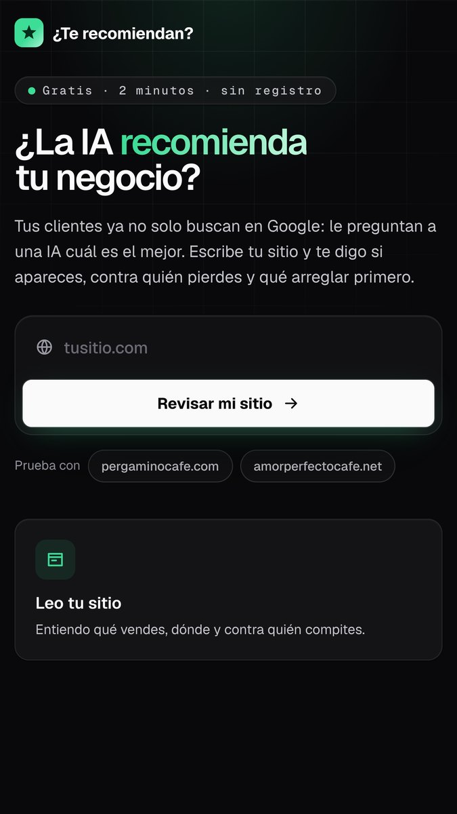
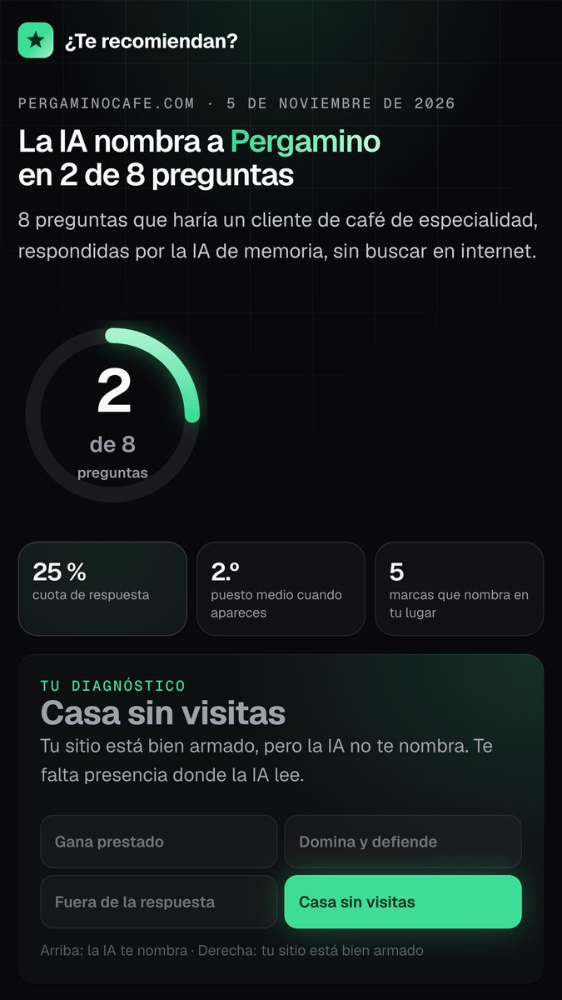
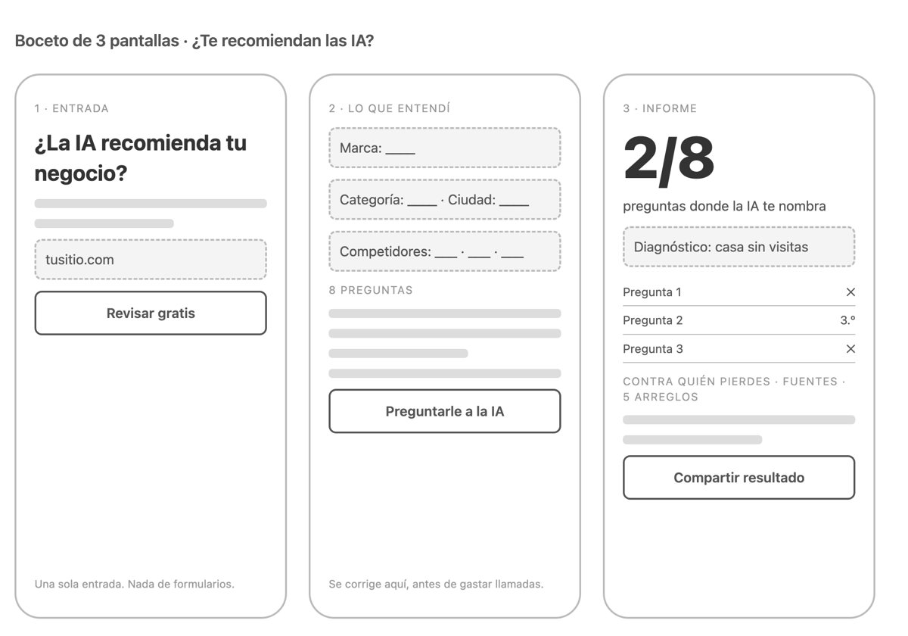

Construye tu propia herramienta que mide si la IA te recomienda
Esta semana la construí en público. Aquí está todo: qué hace y con qué reglas, cómo sacar las llaves gratis y cuidarlas, los dos documentos que le dan memoria al proyecto, y un kit que le subes a Claude para que la construya contigo, fase por fase. No necesitas saber programar: necesitas saber qué pedirle a la IA.
00
Por qué vale la pena medirlo
Tu cliente ya no siempre abre diez pestañas en Google. Le pregunta a una IA «¿cuál es el mejor…?» y la IA le contesta con tres nombres. Si no estás en esos tres, para ese cliente no existes, y ningún tablero de marketing te lo dice.
Lo que encontré al construirla: probé con cuatro cafés de Bogotá. El que tiene el sitio mejor armado (100 de 100) salió en 2 de 8 respuestas; otro, con un sitio de 50, salió en 7. La IA no recomienda con tu sitio: recomienda con lo que leyó de ti en internet. Listas de «los mejores», prensa, reseñas.


A
Antes de empezar: las cuentas y las llaves
Son gratis y toman unos 20 minutos. Las sacas tú, porque piden iniciar sesión. Una «llave» (API key) es una contraseña que le permite a tu herramienta usar un servicio: por eso se guarda como secreto y nunca se comparte.
Las reglas de las llaves, antes de sacar la primera
Las llaves se escapan sobre todo mientras construyes: en el chat con la IA, en una captura, en un commit o en la salida de un comando. Estas ocho reglas valen desde el primer minuto.
- La llave la sacas y la pegas tú. El agente nunca la pide por el chat, nunca la escribe y nunca la muestra en la terminal.
- Un solo lugar: el archivo
app/.dev.vars, con permisos cerrados y fuera del repositorio. En línea, como secreto de Cloudflare. No va en el código, en la página, en los documentos, en las pruebas, en una captura ni en un mensaje de commit. - El archivo de llaves se lee, no se ejecuta. Nunca
source,catniechode su contenido. Para comprobar que está bien se miran los nombres de las variables y su largo, no el valor. - Llaves gratis, de proyectos sin facturación. Si una se escapa, el daño es una cuota agotada y no una cuenta de cobro.
- La llave viaja en un encabezado, nunca en la dirección, porque las direcciones terminan guardadas en registros.
- La plantilla va vacía. El archivo de ejemplo lleva los nombres de las variables y ningún valor.
- Antes de cada commit y de publicar:
npm run llaves. Busca el valor real de cada llave en todo el proyecto. Si la encuentra, no se sube nada. - Si una llave se escapó, se revoca y se crea otra ese mismo día. Borrar el mensaje no basta. Queda anotado en la memoria del proyecto.
source. Ese comando ejecuta el archivo. En otro proyecto, una línea mal escrita se corrió como comando y el mensaje de error imprimió una llave completa: tocó revocarla. Desde entonces el archivo se lee como texto, línea por línea.1. Los programas
- Claude Code. El agente que crea los archivos y corre los comandos por ti. Se instala desde claude.com/claude-code y trabaja dentro de una carpeta de tu computador. (Un proyecto en claude.ai sirve para planear, pero ahí tendrías que copiar los archivos a mano.)
- Node.js. Lo que hace correr la herramienta en tu computador y publicarla. Entra a nodejs.org, baja la versión LTS e instálala. Para comprobar, escribe
node -ven la terminal: debe decir 20 o más.
2. La llave de Gemini (la IA a la que le preguntas)
- Entra a aistudio.google.com con tu cuenta de Google.
- En el menú, abre Get API key (Obtener clave de API).
- Pulsa Create API key y elige crearla en un proyecto nuevo.
- No actives la facturación en ese proyecto. Así, si alguien abusa de tu herramienta, Google responde «cuota agotada» y no te cobra un peso.
- Copia la llave. Hoy empiezan por
AQ.(las antiguas, porAIza; las dos sirven). - Guárdala tú en el archivo
app/.dev.varscuando Claude te lo diga, en una línea:GEMINI_API_KEY=tu-llave.
gemini-3.1-flash-lite, porque los modelos «preview» gratis se acaban en 2 revisiones. Si algún día activas la facturación, puedes encender la búsqueda y ver de dónde saca sus respuestas, pero eso sí cuesta.3. Cloudflare (donde vive la herramienta)
- Crea la cuenta en dash.cloudflare.com/sign-up y confirma el correo.
- En el panel, entra a Workers y Pages. La primera vez te pide un subdominio: tu herramienta quedará en
nombre.tu-subdominio.workers.dev. Elige uno neutro. - En la terminal, dentro de la carpeta
app, escribenpx wrangler login. Se abre el navegador: autoriza. - Crea la caché con
npx wrangler kv namespace create CACHEy copia elidque aparece. Claude te dice dónde pegarlo.
4. Turnstile (el filtro contra robots)
- En el panel de Cloudflare, abre Turnstile y pulsa Add widget.
- Nombre: el de tu herramienta. Hostname: la dirección donde vivirá, por ejemplo
mi-herramienta.tu-subdominio.workers.dev. - Modo: Managed. Crear.
- Copia la Site key (es pública) y la Secret key (es secreta). En tu computador no hacen falta: solo para publicar.
5. La firma
Un texto largo al azar que firma las preguntas que redacta la IA (en la parte C ves por qué). En Mac o Linux: openssl rand -hex 32. O pídele a Claude que lo genere directo en el archivo, sin mostrarlo.
Dónde va cada cosa
| Qué | En tu computador | En línea |
|---|---|---|
| Llave de Gemini | app/.dev.vars | Secreto: npx wrangler secret put GEMINI_API_KEY |
| Firma | app/.dev.vars | Secreto: npx wrangler secret put FIRMA_SECRETO |
| Turnstile, secret key | No hace falta | Secreto: npx wrangler secret put TURNSTILE_SECRET |
| Turnstile, site key | Vacía | wrangler.jsonc |
| Id de la caché | wrangler.jsonc | wrangler.jsonc |
.dev.vars no se sube a ningún lado. La revisión npm run llaves la armas en la fase 1, antes de tener la primera llave.B
El kit: súbelo a Claude y construye
Escribí la herramienta entera en un solo documento: qué hace, las reglas de las llaves, las plantillas de CLAUDE.md y MEMORY.md, las reglas con sus números, cómo procesa cada revisión, el texto exacto de lo que se le pregunta a la IA, la seguridad, las pantallas, las pruebas y cómo publicarla. Con ese documento, Claude la construye contigo sin adivinar nada.
Cómo se usa
- Crea una carpeta vacía (por ejemplo
mi-herramienta) y guarda el kit adentro con el nombreKIT-TE-RECOMIENDAN.md. - Abre Claude Code en esa carpeta.
- Pega el prompt de planificación de abajo.
- Ve aprobando cada fase con «sigue». Claude se detiene al final de cada una y te dice cómo probarla.
El prompt de planificación, paso a paso
Organiza el trabajo en 9 fases cortas, cada una con algo que puedes ver y probar, y le pone a Claude las reglas que no puede romper.
Vas a construir conmigo una herramienta web llamada «¿Te recomiendan las IA?». La especificación completa está en KIT-TE-RECOMIENDAN.md, en esta carpeta. Léela entera antes de responder y síguela tal cual; si algo no está en el kit, pregúntame antes de inventarlo. Cómo vamos a trabajar: - Por fases. Al final de cada fase te detienes y me dices: qué hiciste, cómo lo pruebo yo (un comando o un clic) y qué sigue. No pases a la siguiente sin mi «sigue». - Nunca me pidas la llave de Gemini por el chat ni la escribas en un archivo distinto de app/.dev.vars. Yo la pego. Las reglas de las llaves de la sección 3.7 valen desde el primer minuto: antes de cada commit y antes de publicar corres npm run llaves y me muestras el resultado. - Desde la fase 1 mantienes MEMORY.md. Al empezar cada sesión lo lees antes de tocar nada. Con cada cambio, en el mismo turno, reescribes el estado, agregas una entrada nueva arriba del historial (qué cambió, por qué y dónde) y sumas el aprendizaje si lo hubo. Las entradas viejas no se editan. - Nada se publica hasta que yo escriba «publica». - Lo que se puede decidir con reglas no se le pregunta a la IA. - Todo mensaje que vea el usuario final va en español y escrito a mano. Fase 0 · Entender. Resume en 10 líneas qué vas a construir y qué cuentas y programas necesito (sección 3 del kit). Hazme máximo 3 preguntas: el nombre de mi herramienta, el país por defecto y si uso el diseño del kit o uno propio. Fase 1 · La base: documentos, memoria y llaves. Crea en la raíz CLAUDE.md (la tabla «Si vas a… / Lee», las reglas de las llaves y las reglas que no se rompen) y MEMORY.md con sus cuatro partes y la entrada H01 (plantillas en la sección 10). Crea docs/ con 00-BRIEF, 01-PLAN, 02-ARQUITECTURA, 03-SEGURIDAD, 04-TOKENS y 05-PUESTA-AL-AIRE, cada uno de una página y sacado del kit. Crea app/ solo con package.json, .gitignore, .dev.vars.ejemplo sin valores y revisar-llaves.mjs (sección 10). Todavía sin más código. Para probarlo: dentro de app, npm run llaves debe decir «Llaves en orden». Fase 2 · Esqueleto en modo prueba. Crea app/ como un Cloudflare Worker con archivos estáticos (sección 10), con MODO_PRUEBA=1: el flujo completo funciona con respuestas fijas y sin gastar. Para probarlo: npm install, npm run dev y abrir http://localhost:8787. Fase 3 · Reglas y pruebas. Escribe analisis.js y seguridad.js como dicen las secciones 4 y 6, con las pruebas de la sección 9. Para probarlo: npm test, todo en verde. Fase 4 · Servidor. sitio.js, gemini.js y worker.js (secciones 5, 6 y 7): las rutas, la lectura del sitio, las tres clases de llamadas a Gemini con el texto exacto del kit, los reintentos, los límites y la caché. Fase 5 · Pantallas. Las tres pantallas y la espera (sección 8), móvil primero, con el diseño y las reglas de movimiento del kit. Fase 6 · Con la IA de verdad. Me avisas cuándo pegar mi llave en app/.dev.vars (sin mostrarla), pasas a MODO_PRUEBA=0 y revisamos 3 sitios reales que yo te dé. Compara lo que veas con la sección 12 (errores conocidos). Fase 7 · Seguridad. Revisa la sección 4 punto por punto y deja una prueba automática por cada arreglo. Corre npm run llaves y revisa que MEMORY.md tenga una entrada por cada cambio hecho hasta aquí. Fase 8 · En línea. Prepara desplegar.sh (que corre npm test y npm run llaves antes de publicar y se detiene si alguno falla) y dime, paso a paso, lo que tengo que hacer yo en Cloudflare (sección 11). Publicas solo cuando yo diga «publica»; después probamos juntos la dirección pública.
C
Objetivos, reglas y cómo procesa cada revisión
El objetivo
Que cualquier dueño de negocio sepa, en unos 2 minutos y gratis: si la IA lo recomienda (en cuántas de 8 preguntas aparece y en qué puesto), contra quién pierde, por qué (un diagnóstico) y qué arreglar primero. La única entrada es la dirección del sitio; todo lo demás se deduce y la persona solo corrige.
Qué no hace: no promete subir posiciones, no mide tráfico ni ventas, no pide correo y no guarda datos personales.
Cómo procesa una revisión
Total: 10 llamadas por revisión, y ninguna si el mismo sitio ya se revisó en los últimos 7 días.
Cómo se cuenta
- Te nombra si tu marca (o una forma de escribirla) aparece completa entre las marcas de la respuesta: «Juan Valdez Café» cuenta como «Juan Valdez», pero «Arte» no cuenta como «Arte y Pasión».
- Cuota de respuesta: en cuántas de las 8 preguntas te nombra.
- Puesto medio: en qué lugar te nombra, en promedio, cuando apareces.
- Cimientos del sitio: 6 revisiones de 0 a 100 (datos estructurados del negocio, perfiles enlazados, descripción de la página, contenidos con fecha, preguntas frecuentes y acceso para los rastreadores de IA).
El diagnóstico: cuatro casos
Se cruzan dos cosas: si la IA te nombra en 3 de 8 preguntas o más, y si tu sitio saca 50 de 100 o más.
Los arreglos, por orden de impacto
Cada regla mira un hecho del informe y tiene un peso fijo. Salen los 5 de mayor peso. El orden es criterio, no algo que la IA deba inventar.
| Peso | Cuándo | Arreglo |
|---|---|---|
| 100 | Tu sitio bloquea a los rastreadores de IA | Abre la puerta a los rastreadores de IA |
| 80 | Te nombra en menos de 3 preguntas | Haz que hablen de ti donde la IA aprende: listas de «los mejores», prensa, reseñas |
| 70 | No apareces en ninguna pregunta de comparar | Publica una comparación honesta contra la marca que más te gana |
| 55 | Faltan datos estructurados | Agrega los datos de tu negocio (nombre, dirección, horario, categoría) |
| 50 | No hay preguntas frecuentes | Responde las preguntas de tus clientes |
| 35 | No enlazas tus redes | Enlaza tus perfiles |
| 30 | No hay descripción | Escribe la descripción de tu página |
| 25 | Nada tiene fecha | Pon fecha a lo que publicas |
| 20 | Ya te nombra en 3 o más | Defiende el puesto: vuelve a medir cada 3 meses |
Con la búsqueda de Google encendida se suman tres más: aparecer en los sitios que la IA cita, pedir reseñas con detalle y darle a la IA una razón para citar tu sitio. Los pesos exactos están en el kit.
01
La base: CLAUDE.md, MEMORY.md y las llaves protegidas
Antes del brief y antes de la primera línea de código, el proyecto arranca con dos documentos y una revisión. El agente de IA no recuerda nada entre una sesión y la siguiente: estos archivos son su memoria, y también la tuya.
La estructura
CLAUDE.md el mapa y las reglas MEMORY.md la memoria del proyecto KIT-TE-RECOMIENDAN.md el kit ▸ docs/ para decidir 00-BRIEF.md 01-PLAN.md 02-ARQUITECTURA.md 03-SEGURIDAD.md 04-TOKENS.md 05-PUESTA-AL-AIRE.md ▸ app/ para construir src/ public/ test/ .dev.vars las llaves .dev.vars.ejemplo sin valores revisar-llaves.mjs npm run llaves ▸ corridas/ cada prueba real
CLAUDE.md: el mapa
Una tabla de «si vas a hacer esto, lee aquello» evita que el agente relea todo el proyecto en cada tarea: gasta menos y se equivoca menos. Y las reglas van escritas ahí porque es el único archivo que lee siempre.
# Mi herramienta · contexto para el agente Qué es, en dos líneas. El estado al día vive en MEMORY.md. ## Lee solo lo que necesites | Si vas a… | Lee | |----------------------------|---------------------------| | saber cómo está hoy | MEMORY.md | | entender qué es y qué no | docs/00-BRIEF.md | | saber en qué fase va | docs/01-PLAN.md | | tocar el código | docs/02-ARQUITECTURA.md | | tocar llaves o límites | docs/03-SEGURIDAD.md | | cambiar las preguntas | docs/04-TOKENS.md | | publicar | docs/05-PUESTA-AL-AIRE.md | ## Llaves: reglas de seguridad - Las llaves las saca y las pega la persona. Nunca se piden por el chat, nunca se escriben, nunca se muestran. - Viven solo en app/.dev.vars (permisos 600, fuera de git) y, en línea, como secretos. - El archivo de llaves se lee como texto. Nunca source, cat ni echo. - Antes de cada commit y de publicar: npm run llaves. Si falla, no se sube. - Si una llave se escapó: se revoca ese mismo día y se anota en MEMORY.md. ## Memoria: cada cambio se anota Con cada cambio, en el mismo turno, se actualiza MEMORY.md: el estado, una entrada nueva arriba del historial (qué, por qué y dónde) y el aprendizaje si lo hubo. Las entradas viejas no se editan. ## Reglas que no se rompen - La dirección de entrada se valida. - Lo que se decide con reglas no se le pregunta a la IA. - Las preguntas libres van firmadas. - Costo cero. Publicar lo decido yo.
MEMORY.md: la memoria
Tiene cuatro partes: el estado actual, las decisiones vigentes, los aprendizajes y el historial de cambios, del más reciente al más antiguo. La regla es una sola: con cada cambio, en el mismo turno, se anota. Se reescribe el estado, se agrega una entrada arriba del historial y se suma el aprendizaje si lo hubo. Las entradas viejas no se tocan: una corrección es una entrada nueva.
# MEMORY · Mi herramienta Versión de este documento: 1 · fecha ## 1. Estado actual - Dónde corre y en qué dirección. - Qué tiene: cuántas llamadas hace, cuántas pruebas pasan, qué IA usa. - Qué tan bien acierta, con el número. - Llaves: dónde viven y si npm run llaves pasa. - Qué sigue abierto. ## 2. Decisiones vigentes 1. Cada decisión que no se discute de nuevo, con su motivo. ## 3. Aprendizajes 1. Lo que salió mal y la regla que dejó. ## 4. Historial de cambios Del más reciente al más antiguo. ### H02 · fecha y hora · título corto - Qué: lo que cambió. - Por qué: el motivo o el fallo que lo causó. - Dónde: los archivos. ### H01 · fecha y hora · Arranque - Qué: carpeta, CLAUDE.md, MEMORY.md, documentos y revisor de llaves. - Por qué: empezar con memoria y con las llaves protegidas desde el primer día. - Dónde: raíz, docs/ y app/.
Así se ve una entrada real de mi construcción:
### H02 · 29-oct-2026 · El «6 de 8» falso
- Qué: la marca se quita de su propia lista de competidores, con una prueba automática que lo cuida.
- Por qué: la primera prueba dio «6 de 8» porque la marca estaba en la lista de competidores y se contaba dos veces.
- Dónde: app/src/worker.js, app/src/analisis.js, app/test/reglas.test.js.El prompt
Antes de escribir código, arma la base del proyecto. 1) Crea CLAUDE.md en la raíz con una tabla «Si vas a… / Lee», una sección de reglas de seguridad de las llaves y las reglas que no se rompen. 2) Crea MEMORY.md con cuatro partes (estado actual, decisiones vigentes, aprendizajes e historial de cambios, del más reciente al más antiguo) y la entrada H01 con lo que acabas de hacer. Desde ahora, con cada cambio y en el mismo turno, actualizas MEMORY.md: reescribes el estado, agregas una entrada nueva arriba del historial (qué, por qué y dónde) y sumas el aprendizaje si lo hubo; las entradas viejas no se editan. Al empezar cada sesión lo lees antes de tocar nada. 3) Crea app/ con package.json, un .gitignore que ignore .dev.vars, un .dev.vars.ejemplo con los nombres de las variables y sin valores, y revisar-llaves.mjs con el comando npm run llaves: debe fallar si .dev.vars tiene permisos más abiertos que 600, si el ejemplo trae valores o si cualquier archivo del proyecto contiene el valor real de una llave o un texto con forma de llave, y nunca debe imprimir el valor. Reglas para ti: nunca me pidas una llave por el chat, nunca hagas source, cat ni echo del archivo de llaves, y corre npm run llaves antes de cada commit y de publicar. Para terminar, muéstrame que npm run llaves dice «Llaves en orden» y que falla con una llave falsa en una carpeta de prueba.
02
El brief, en una página
Antes de pedirle código a la IA, escribe qué va a hacer la herramienta. Si no cabe en una página, todavía no está claro. Esta página es la que vas a releer cada vez que dudes.
La plantilla
## Problema Qué le pasa al cliente hoy, en dos frases. ## Objetivo medible Qué va a saber la persona al terminar, con un número. Ej.: en cuántas de 8 preguntas de compra la IA nombra su marca. ## Cómo sé que la herramienta funciona Ej.: termina en menos de 2 minutos; acierta la marca en 8 de 10 sitios; cuesta 0. ## Qué NO hace ✕ No promete subir posiciones. ✕ No pide correo ni datos personales. ## Entrada única La dirección del sitio. Todo lo demás se deduce. ## Método Los pasos, en lenguaje de cliente.
El prompt
Quiero construir una herramienta web gratuita que mida si la IA recomienda un negocio cuando un cliente le pregunta por lo que vende. Antes de escribir código, ayúdame a escribir el brief en una sola página con estas partes: problema, objetivo medible, cómo sé que la herramienta funciona, qué NO hace, entrada única y método. La entrada debe ser solo la dirección del sitio. Si te falta algo, hazme máximo 3 preguntas. Guárdalo en docs/00-BRIEF.md.
Con el brief aprobado, los documentos
Lee docs/00-BRIEF.md. Escribe 01-PLAN.md con fases cortas, donde cada fase termine en algo que se pueda ver y diga cómo sé que terminó. Escribe también 02-ARQUITECTURA, 03-SEGURIDAD y 04-TOKENS, de una página cada uno. Revisa que la tabla «Si vas a… / Lee» de CLAUDE.md apunte a cada documento y anota el cambio en MEMORY.md con una entrada nueva. Todavía no escribas código.
03
Trabajar con la IA sin gastar de más
La regla que más plata ahorra: lo que se puede decidir con reglas no se le pregunta a la IA. La IA es buena leyendo y redactando; las cuentas y los diagnósticos los hacen reglas fijas, que son gratis, siempre dan lo mismo y se pueden probar.
10 llamadas por revisión. Mi primera versión, para proyectos, hacía entre 30 y 90.
Cinco trucos para gastar menos
- Resume antes de mandar. Del sitio solo van el título, la descripción, los subtítulos y 1.500 caracteres de texto: de unos 30.000 tokens a unos 800.
- Agrupa. Las 8 respuestas se leen en una sola llamada, no en 8.
- Pide formato fijo. Respuesta en JSON con un esquema: no hay que adivinar qué dijo.
- Guarda lo que ya preguntaste. Si alguien revisa el mismo sitio en 7 días, no se gasta nada.
- Que no piense de más. En Gemini, el pensamiento en nivel bajo para tareas de leer y extraer.
Skills: un manual por trabajo
Una skill es un manual que la IA sigue al pie de la letra. Usé tres: una con el método para medir visibilidad en IA (las preguntas, los cuatro diagnósticos), una de diseño para las pantallas y una de revisión de seguridad antes de publicar. Si tu agente no las tiene, el kit es tu primera skill.
Revisa el plan y dime cuántas llamadas a la IA hace cada revisión. Propón cómo bajarlas sin perder calidad: qué pasar a reglas fijas, qué agrupar en una sola llamada, qué resumir antes de mandar y qué guardar en caché. Escribe la decisión en docs/04-TOKENS.md con el antes y el después.
04
Boceto y pantallas
Primero un boceto en gris, sin colores ni código real. Tres pantallas: la entrada, lo que la herramienta entendió (para corregir antes de gastar llamadas) y el informe. Si el boceto no se entiende, el diseño tampoco lo va a arreglar.

Haz un boceto en HTML, en gris y sin colores, de 3 pantallas de celular una al lado de la otra: 1) entrada con un solo campo para el sitio y un botón; 2) "lo que entendí": marca, categoría, ciudad y competidores editables, y las 8 preguntas; 3) informe: un número grande con cuántas preguntas te nombran, el diagnóstico, la tabla por pregunta, contra quién pierdes y los arreglos. Guárdalo en docs/mockups/boceto.html.
Después, el diseño de verdad. Mi primera versión era muy colorida y parecía un juguete. La rehíce sobria: fondo oscuro, un solo color de acento para lo que importa y movimiento con criterio. Que los botones se encojan un poco al presionarlos, que nada tarde más de 300 milisegundos y que todo se apague si la persona tiene activado «reducir movimiento».
Con el boceto como guía, construye las 3 pantallas reales en app/public con HTML, CSS y JavaScript, sin librerías. Móvil primero y un diseño sobrio y profesional: fondo casi negro (#09090B), tarjetas #111113 con bordes finos, texto claro, un solo color de acento (verde menta #3DDC97) para las cifras y lo importante, letras Geist y Geist Mono para las etiquetas, números tabulares y nada de degradados violeta y rosa. Movimiento solo en transform, opacity y filter, curvas de salida rápida, botones que se encogen a 0,97 al presionarlos, efectos de pasar el mouse solo en computador y todo apagable con prefers-reduced-motion. Todo texto que venga de la IA o del sitio se pinta como texto, nunca como HTML, y sin los asteriscos de Markdown.
05
El servidor: preguntarle a la IA como un cliente
Usé Cloudflare Workers, que es gratis y guarda las llaves como secretos, y la API de Gemini, que con la llave gratis responde de memoria. El servidor tiene dos pasos:
Las 8 preguntas, en 4 intenciones
| Intención | Plantilla |
|---|---|
| Descubrir | ¿Cuál es el mejor [lo que vendes] en [ciudad]? Recomiéndame 3 opciones de [lo que vendes] en [ciudad]. |
| Comparar | ¿Qué es mejor, [competidor 1] o [competidor 2]? ¿Hay una opción mejor que ambas? ¿Qué alternativas a [competidor 1] hay en [ciudad]? |
| Decidir | ¿Qué [lo que vendes] en [ciudad] tiene las mejores opiniones de clientes? Voy a escoger un [lo que vendes] en [ciudad]. ¿Cuál me recomiendas y por qué? |
| Problema | Dos preguntas con una necesidad concreta que tu negocio resuelve, escritas por la IA a partir de tu sitio. |
Ninguna pregunta nombra tu marca. Si la nombrara, la IA la repetiría y la medición no serviría. El texto exacto de las tres llamadas a la IA está en el kit, sección 7.
Construye el servidor en app/src como un Cloudflare Worker con dos rutas. /api/perfil: recibe la URL, descarga el sitio (máximo 8 segundos y 400 KB), resume título, descripción, h1, h2 y 1.500 caracteres, y en UNA llamada a Gemini con salida JSON deduce marca, categoría, ciudad, 3 competidores y 2 preguntas de "problema". /api/auditar: arma 8 preguntas (6 de plantilla y las 2 de problema, firmadas), se las hace a Gemini de a 2 (la versión gratis limita por minuto), de memoria, con búsqueda de Google solo si BUSQUEDA=1; lee las 8 respuestas en UNA llamada que devuelve las marcas nombradas en orden, y arma el informe con reglas en un archivo aparte (analisis.js): cuota, puesto medio, contra quién pierdes, diagnóstico y arreglos. Usa gemini-3.1-flash-lite con el pensamiento en nivel bajo y reintenta cuando la respuesta traiga retryDelay. Agrega un modo prueba con respuestas fijas para probar todo sin gastar, y pruebas automáticas de las reglas.
06
Seguridad: lo que nadie te cuenta
Una herramienta gratis y abierta es un blanco. Estos son los puntos que revisé antes de publicar:
Revisa la seguridad antes de publicar y arregla lo que encuentres: ¿la llave puede llegar al navegador o al repositorio? ¿la URL de entrada puede apuntar a una IP o a una dirección interna, también después de una redirección? ¿alguien puede mandar sus propias preguntas y usar la herramienta como una IA gratis con mi cuota? ¿hay límite por persona y por día? ¿algún error le muestra a la persona detalles técnicos o en inglés? Deja una prueba automática por cada arreglo y escribe todo en docs/03-SEGURIDAD.md.
07
En línea, gratis
Cloudflare Workers sirve las pantallas y el servidor en el mismo lugar, en el plan gratis. Estos pasos los haces tú, porque piden iniciar sesión y pegar llaves (la parte A explica cada una):
# 1. Inicia sesión (abre el navegador) y crea la caché npx wrangler login npx wrangler kv namespace create CACHE # 2. Pruebas y primera publicación (te da la dirección) npm test && npx wrangler deploy # 3. Los secretos (pega cada uno cuando te lo pida) npx wrangler secret put GEMINI_API_KEY npx wrangler secret put FIRMA_SECRETO npx wrangler secret put TURNSTILE_SECRET # 4. Modo real: MODO_PRUEBA en "0" y la site key en wrangler.jsonc npx wrangler deploy # Ver errores en vivo y volver atrás si algo sale mal npx wrangler tail npx wrangler rollback
Prepara la puesta en línea en Cloudflare Workers: un script desplegar.sh que se niegue a publicar si falta el id de la caché, si falta algún secreto, si falta la site key de Turnstile, si el modo prueba sigue activo o si fallan las pruebas. Escribe en docs/05-PUESTA-AL-AIRE.md los pasos que tengo que hacer yo (iniciar sesión, crear la llave de Gemini en un proyecto sin facturación, crear el widget de Turnstile) y cómo volver atrás si algo falla.
Cuando esté en línea, pruébala desde tu celular con un sitio que conozcas. La cuarta revisión en una hora debe decirte que esperes.
08
Lo que salió mal (y la regla que quedó)
gemini-3.1-flash-lite, preguntar de a 2 y esperar lo que pida Google cuando limita por minuto.id="turnstile" tapaba el script de Cloudflare. Regla: probar en la dirección pública antes de anunciar nada.**negritas** de Markdown y salían tal cual. Regla: limpiar el texto de la IA antes de mostrarlo.09
Mientras tanto, hazlo a mano: 30 preguntas
Si hoy no vas a construir nada, haz la prueba a mano en ChatGPT o en Gemini. Cambia lo que está entre corchetes, haz cada pregunta en una conversación nueva y anota el resultado.
## Descubrir (8) 1. ¿Cuál es el mejor [lo que vendes] en [ciudad]? 2. Recomiéndame 3 opciones de [lo que vendes] en [ciudad]. 3. ¿Dónde consigo un buen [lo que vendes] cerca de [barrio o zona]? 4. ¿Qué [lo que vendes] en [ciudad] recomiendan los que saben? 5. Busco [lo que vendes] en [ciudad] para [un uso concreto]. ¿Qué me sugieres? 6. ¿Cuáles son los [lo que vendes] más conocidos de [ciudad]? 7. ¿Qué [lo que vendes] nuevo vale la pena en [ciudad]? 8. Dame una lista de [lo que vendes] en [ciudad] con precios. ## Comparar (7) 9. ¿Qué es mejor, [competidor 1] o [competidor 2]? 10. ¿Qué alternativas a [competidor 1] hay en [ciudad]? 11. Compara los 3 [lo que vendes] más recomendados de [ciudad]. 12. ¿[Competidor 1] vale lo que cuesta o hay algo mejor? 13. ¿Cuál es más barato y bueno: [competidor 1], [competidor 2] u otro? 14. ¿Qué diferencia hay entre los [lo que vendes] de [ciudad]? 15. Si no me gustó [competidor 1], ¿a dónde voy? ## Decidir (8) 16. ¿Qué [lo que vendes] en [ciudad] tiene las mejores opiniones? 17. Voy a escoger un [lo que vendes] en [ciudad]. ¿Cuál me recomiendas y por qué? 18. ¿En cuál [lo que vendes] de [ciudad] puedo confiar? 19. ¿Qué [lo que vendes] de [ciudad] tiene mejor servicio? 20. ¿Cuál [lo que vendes] tiene mejor relación calidad y precio en [ciudad]? 21. ¿Qué [lo que vendes] de [ciudad] me recomiendas para regalar? 22. ¿Cuál es el [lo que vendes] favorito de la gente en [ciudad]? 23. Si solo pudiera ir a un [lo que vendes] en [ciudad], ¿cuál? ## Problema (7) 24. Necesito [la necesidad que resuelves]. ¿Quién lo hace bien en [ciudad]? 25. Tengo [un problema concreto]. ¿A quién acudo? 26. ¿Cómo resuelvo [el problema] sin gastar mucho en [ciudad]? 27. ¿Quién me puede ayudar con [la necesidad] hoy mismo en [ciudad]? 28. Busco a alguien de confianza para [la necesidad]. ¿Opciones? 29. ¿Qué hago si [el problema]? ¿Algún negocio que lo resuelva? 30. ¿Dónde encuentro [algo que solo tú ofreces] en [ciudad]?
Anota así
| # | ¿Te nombra? | Puesto | A quién nombra | Fuentes que cita |
|---|---|---|---|---|
| 1 | Sí / No | 1.º, 2.º… | Marca A, Marca B… | Si las muestra |
Cómo leerlo
- Tu cuota: en cuántas de las 30 te nombra. 11 o más es un resultado alto.
- Contra quién pierdes: la marca que más aparece cuando tú no apareces.
- De dónde lo saca: si la IA muestra fuentes, los sitios que más se repiten. Ahí tienes que estar.
Los 5 arreglos, en este orden
- Haz que hablen de ti donde la IA aprende: listas de «los mejores», prensa, guías de la ciudad, fichas completas y reseñas recientes.
- Pide reseñas con detalle: qué compraron y por qué volverían.
- Publica una comparación honesta contra la marca que te gana: en qué eres mejor y en qué no.
- Responde las preguntas de tus clientes en una página de preguntas frecuentes.
- Dale a tu sitio con qué ser citado: datos de tu negocio bien marcados, fechas y algo que nadie más tenga.
Vuelve a medir cada 3 meses: las respuestas de la IA cambian.
¿Conoces a alguien a quien la IA no recomienda?
Pásale esta guía. Y si construyes la tuya, cuéntame cómo te fue en @jonathanrod.ia o en LinkedIn. Cada semana construyo una herramienta nueva, en público.